Tutorial de Siril: apilado y procesado de imágenes en astrofotografía
Por Sathvik Acharya
Una guía completa para apilar imágenes de astrofotografía usando Siril, un software potente y gratuito para el procesado de imágenes astronómicas.
La astrofotografía nos permite capturar la belleza del cielo nocturno, pero debido a los largos tiempos de exposición y a las condiciones de poca luz, una sola imagen suele contener mucho ruido y pocos detalles. Para solucionarlo, los astrofotógrafos utilizan una técnica llamada apilado de imágenes. Al combinar múltiples imágenes de la misma escena, podemos mejorar la relación señal‑ruido y revelar más detalles celestes.
En esta guía te acompañaré paso a paso en el proceso de apilar tus imágenes de astrofotografía usando Siril, un software potente y gratuito diseñado para el procesado de imágenes astronómicas.

Por qué usar Siril
Siril destaca como un software especializado para el apilado de imágenes de astrofotografía, ofreciendo una serie de herramientas potentes pensadas para el procesado astronómico de alta calidad. Sus funcionalidades clave incluyen herramientas de alineado y calibración muy precisas que corrigen desplazamientos y distorsiones debidos a la atmósfera y al sistema óptico, produciendo apilados nítidos y precisos.
Los algoritmos de apilado de Siril reducen eficazmente el ruido —crítico en astrofotografía de cielo profundo— a la vez que preservan los detalles finos, lo que se traduce en imágenes claras y con buen contraste. Además, Siril proporciona extracción de fondo, calibración de color y corrección fotométrica del color, mejorando los tonos naturales de los objetos celestes.
El software admite tanto flujos de trabajo automatizados como controles manuales, por lo que se adapta a usuarios principiantes y avanzados. Al ser una herramienta gratuita y de código abierto, Siril se actualiza de forma continua, lo que lo convierte en una opción robusta y accesible para cualquier aficionado a la astrofotografía.
Instalar Siril
Puedes descargar e instalar Siril directamente desde la web oficial: https://siril.org/
Estos son los pasos de instalación en distintas plataformas:
Para Ubuntu/Debian
sudo apt install siril
Para Fedora
sudo dnf install siril
Para Arch Linux
sudo pacman -S siril
Requisitos previos
Para realizar el apilado de imágenes necesitas un conjunto de múltiples tomas del mismo objeto o campo celeste. Asegúrate de que estas imágenes se han tomado en condiciones similares y con ajustes consistentes para obtener un resultado de apilado óptimo. Cuantas más imágenes tengas, mejor será el resultado final, ya que el apilado ayuda a reducir el ruido y a resaltar los detalles.
Practicar el apilado de imágenes de astrofotografía
Puedes descargar imágenes de práctica para apilar astrofotografía desde las siguientes fuentes para adquirir experiencia práctica:
Estos recursos proporcionan conjuntos de datos excelentes para practicar tus técnicas de apilado y procesado de imágenes.
Calibración de imágenes
Esta sección describe cómo organizar los archivos de imagen para apilarlos en Siril.
Organizar tus archivos de imagen para el apilado en Siril
Antes de comenzar a procesar tus imágenes de astrofotografía en Siril, es esencial organizar correctamente los archivos.
- 1. Empieza creando un directorio principal con el nombre del objeto o cúmulo estelar con el que estás trabajando (por ejemplo: M31 – la galaxia de Andrómeda).

-
2. Dentro de este directorio, crea cuatro subdirectorios:
lights, darks, biases y flats.
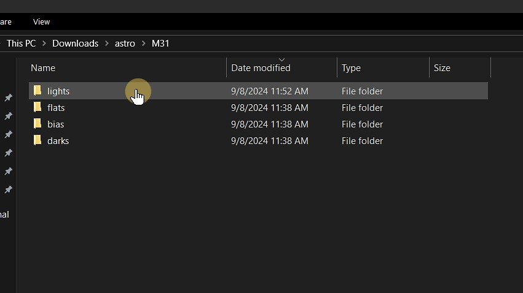
-
Lights:coloca todas tus imágenes en bruto del objeto (las que vas a apilar) en la carpeta lights. -
Darks:coloca aquí tus dark frames para corregir el ruido del sensor. -
Biases:añade tus bias frames en esta carpeta para corregir el ruido de lectura. -
Flats:guarda aquí tus flat fields para corregir el viñeteo o el polvo en el sensor.
- 3. En este paso, colocaremos únicamente los archivos light (las imágenes en bruto) en la carpeta lights. En esta guía trabajaremos exclusivamente con estas imágenes light.

Nota: estos directorios son cruciales porque los scripts integrados de Siril dependen de ellos para ejecutar el proceso de apilado. Si estos directorios no se crean correctamente o no contienen las imágenes correspondientes, los scripts no se ejecutarán y aparecerán errores. Siguiendo esta estructura, asegurarás un flujo de trabajo de apilado fluido.
Iniciar Siril
Configurar el espacio de trabajo
De forma predeterminada, Siril puede abrirse con un directorio de trabajo distinto de aquel donde tienes tus imágenes. Para asegurarte de que Siril puede acceder a tus archivos y realizar el apilado correctamente, sigue estos pasos para cambiar el directorio de trabajo:
- 1. Abre Siril: inicia Siril en tu ordenador.
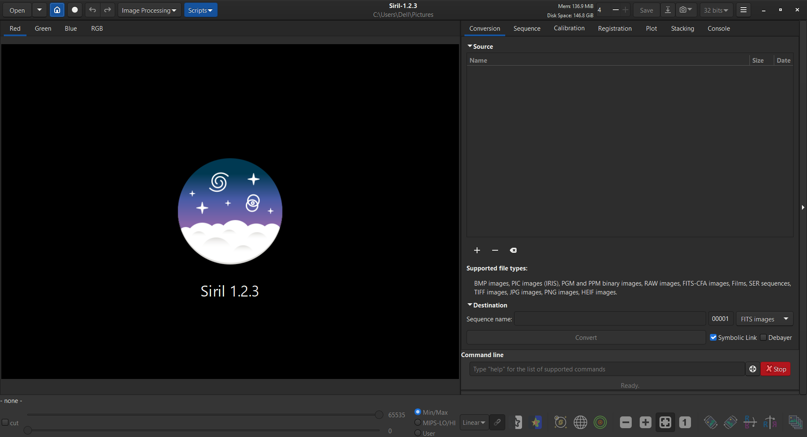
- 2. Para cambiar el directorio actual en Siril, haz clic en el icono de casa situado en la esquina superior izquierda de la ventana.

- 3. Esta acción abrirá un explorador de archivos, que te permitirá navegar y seleccionar el directorio donde se encuentran tus imágenes.
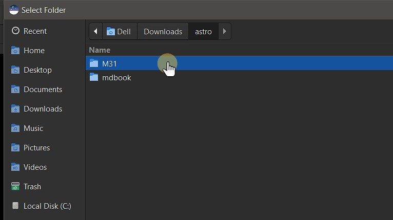
- 4. Después de navegar hasta el directorio que contiene las carpetas lights, darks, flats y biases, haz clic en Open para establecerlo como directorio de trabajo en Siril.
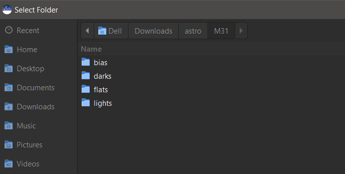
Ahora Siril está preparado para trabajar con las imágenes del directorio especificado. Puedes verificarlo comprobando la esquina superior izquierda de la ventana de Siril, donde se muestra el directorio de trabajo actual.
Instalar scripts
- 1. Para instalar scripts, haz clic en el icono de tres rayas situado en la esquina superior derecha de la ventana de Siril.

- 2. Haz clic en Get Scripts.
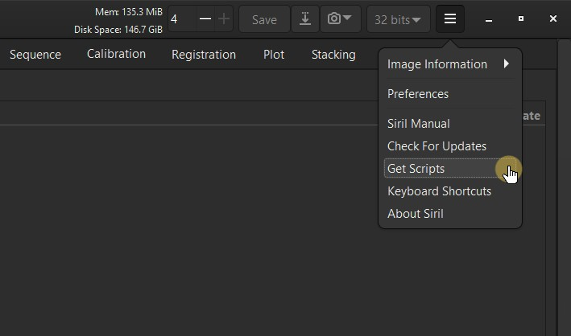
- 3. Tras hacer clic en Get Scripts, serás redirigido a la página de documentación de Siril. Desde ahí, localiza el enlace a GitLab en la sección Getting More Scripts y haz clic en él.

- 4. Haz clic en preprocessing.

- 5. Haz clic en OSC_Preprocessing_WithoutDBF.ssf.
Nota: descargaremos el script OSC_Preprocessing_WithoutDBF.ssf, ya que en esta guía trabajamos exclusivamente con imágenes light.

- 6. Descarga el archivo OSC_Preprocessing_WithoutDBF.ssf.

Después de descargar el script, colócalo en el siguiente directorio:
/Este equipo/Disco local (C:)/Program Files/Siril/scripts/OSC_Preprocessing_WithoutDBF.ssf
Una vez que los scripts están instalados y en el directorio correcto, ya estás listo para comenzar el proceso de apilado en Siril.
Apilar imágenes
- 1. Haz clic en Scripts en el menú superior.

- 2. Selecciona OSC_Preprocessing_WithoutDBF de la lista de scripts disponibles.

- 3. Haz clic en Run para ejecutar el script.

- 4. Espera a que el script termine. Puedes ver el progreso de la ejecución en la ventana de consola.

La imagen final apilada se guardará en el directorio principal llamado M31.
- 5. Para abrir la imagen apilada final, haz clic en Open en el menú superior.

- 6. La imagen final apilada se llamará result.fit y se guardará en formato FITS. Selecciona result.fit y haz clic en Open para cargarla.

- 7. Esta es la imagen apilada en bruto de M31 mostrada en vista lineal.

- 8. Para cambiar de Linear a Autostretch, haz clic en Linear y selecciona Autostretch para ajustar la vista de la imagen.


Nota: Autostretch aplica un estirado temporal a los datos de la imagen, haciendo que los detalles débiles sean más visibles sin alterar permanentemente los datos en bruto. Es útil para previsualizar la imagen apilada antes de realizar más procesado.

Nota: después de aplicar Autostretch a la imagen apilada, puedes notar ruido verde. Es algo habitual y se puede corregir en etapas posteriores del procesado.
- 9. Para cambiar a la vista de Histograma, selecciona Histogram entre las opciones de visualización. Cambiar a la vista de histograma te proporciona un control más fino sobre el rango tonal de la imagen, permitiendo una mejor visualización de los detalles y ajustes de exposición.

En la vista de Histograma puedes ver la distribución de valores de píxel de la imagen. Esta vista es útil para ajustar niveles de brillo y contraste.
Extracción de fondo
La extracción de fondo es un paso crucial en el procesado de imágenes de astrofotografía. Ayuda a eliminar ruido de fondo o variaciones no deseadas de tus imágenes, permitiendo que los objetos celestes destaquen con mayor claridad. En esta sección veremos los pasos para realizar la extracción de fondo en Siril.
Para comenzar el posprocesado, primero recorta los artefactos y el ruido de los bordes, visibles en la vista de Histograma.
- 1. Para recortar, haz clic con el botón izquierdo en la imagen, selecciona el área que quieres conservar y luego haz clic derecho y elige Crop para aplicar los cambios.

Tras el recorte, vuelve a la vista Autostretch para mejorar la visibilidad y luego inicia el proceso de extracción de fondo.
- 2. Ve a Image Processing.
La extracción de fondo en Siril es un proceso que ayuda a eliminar el ruido de fondo o variaciones no deseadas de tus imágenes astronómicas.

- 3. Selecciona Background Extraction.
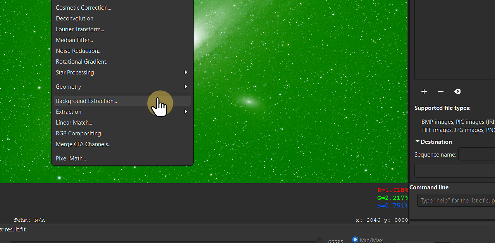
- 4. Genera las muestras (samples).

Nota: Siril utiliza estas muestras para estimar la intensidad del fondo y los gradientes causados por factores como la contaminación lumínica o el ruido del sensor. Tras seleccionar las muestras, Siril restará el modelo de fondo estimado de tu imagen, creando un fondo más limpio y uniforme.
- 5. Para asegurar una extracción de fondo precisa, haz clic derecho sobre cualquier muestra que esté demasiado cerca de estrellas brillantes u otros objetos celestes para eliminarla. Esto ayuda a evitar interferencias de los objetos y garantiza que solo se modele el fondo.
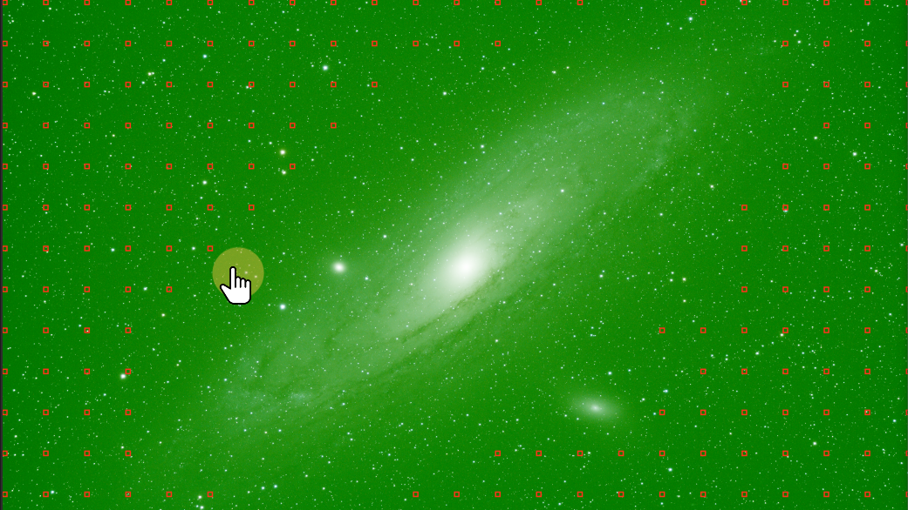
- 6. Haz clic en Compute Background para finalizar el proceso y luego en Apply.
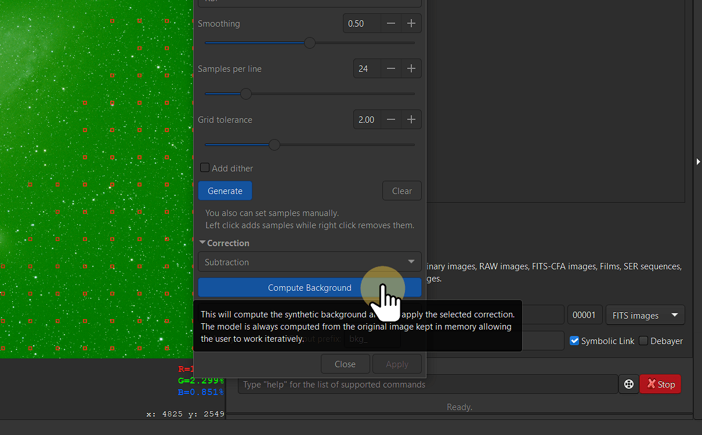
Tras aplicar la extracción de fondo notarás una mejora significativa en la calidad de la imagen. El ruido y las variaciones del fondo se habrán reducido, permitiendo que los objetos celestes destaquen con mayor claridad.
Calibración fotométrica del color
La calibración fotométrica del color es esencial en el apilado de imágenes de astrofotografía para corregir desequilibrios de color causados por factores como la contaminación lumínica, las características del sensor y las diferentes condiciones de exposición. En Siril, este proceso ajusta los colores de las imágenes apiladas para que coincidan con los colores reales de los objetos celestes, garantizando resultados precisos y de aspecto natural.
Siril lo consigue analizando el color de las estrellas y otros objetos en la imagen y ajustando los canales rojo, verde y azul para eliminar dominantes de color no deseadas. Esta calibración es vital para crear imágenes científicamente correctas y visualmente consistentes, especialmente al apilar múltiples tomas con distintos sesgos de color.
- 1. Para realizar la calibración fotométrica del color, haz clic en Color Calibration.
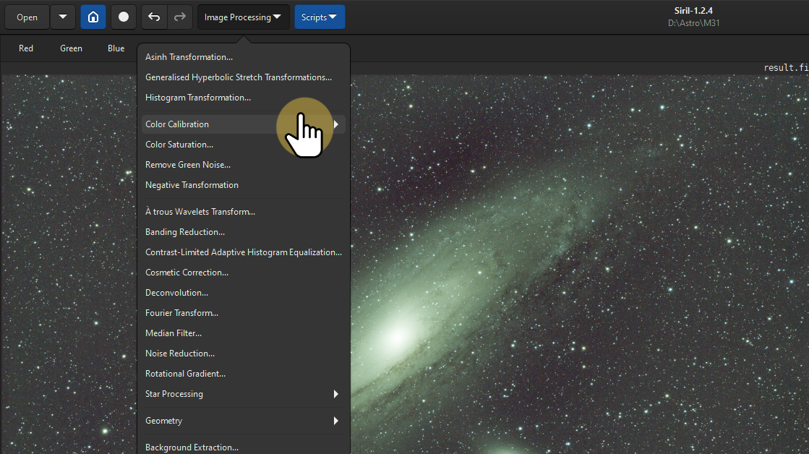
- 2. Selecciona Photometric Color Calibration.
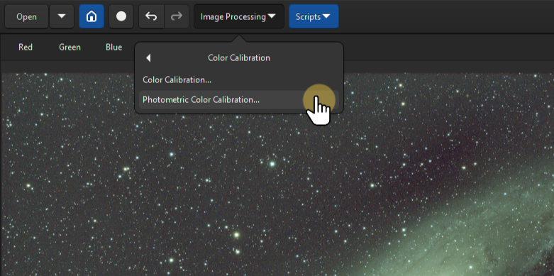
Se abrirá una ventana en la que deberás introducir el número de catálogo para hacer coincidir las coordenadas de ascensión recta (RA) y declinación (Dec). Si utilizas un telescopio, las coordenadas se mostrarán automáticamente. Si disparas con una DSLR, los valores de coordenadas aparecerán a cero por defecto.
Para calibrar las imágenes de M31 (la galaxia de Andrómeda), el número de catálogo es NGC 224.
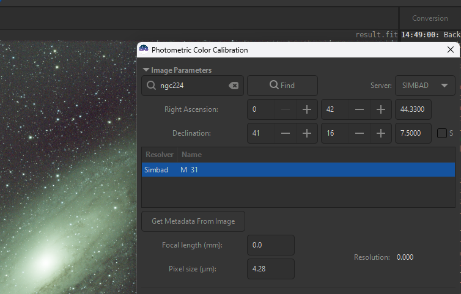
Puedes elegir entre varios catálogos, como VizieR, SIMBAD o CDS, para hacer coincidir las coordenadas con la entrada de catálogo adecuada.
Añade la distancia focal y el tamaño de píxel de tu telescopio para mejorar la precisión de la calibración. Estos valores ayudan a refinar la corrección fotométrica en función de tu equipo.
Una vez introducida toda la información necesaria, haz clic en OK.
Eliminar ruido verde
El ruido verde es un problema habitual en imágenes de astrofotografía, especialmente al usar ciertas cámaras o sensores. Aparece como un tinte o dominante verdosa en la imagen que puede perjudicar la calidad y la fidelidad del resultado final. Eliminar el ruido verde es esencial para conseguir una imagen más equilibrada y de aspecto natural.
- 1. Si persiste ruido verde en la imagen, haz clic en Remove green noise para eliminarlo.
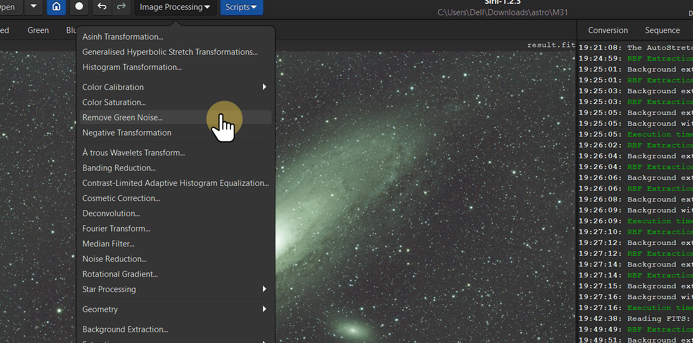
- 2. Deja las opciones por defecto sin cambios y simplemente haz clic en Apply.

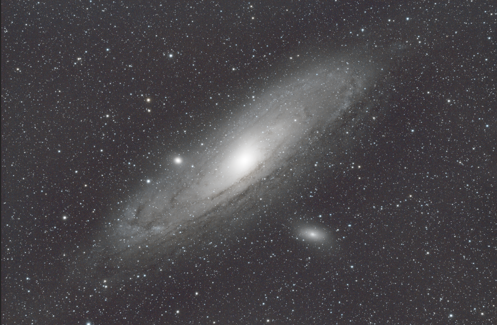
Imagen más limpia y equilibrada tras eliminar el ruido verde.
Estirar la imagen
Estirar la imagen es un paso crucial en el procesado de astrofotografía. Mejora la visibilidad de los detalles y colores tenues en la imagen apilada, haciendo que el resultado final sea más atractivo visualmente. En esta sección veremos los pasos para estirar la imagen de forma eficaz.
- 1. Cambia la vista a Linear View y haz clic en Histogram Transformation para estirar la imagen.
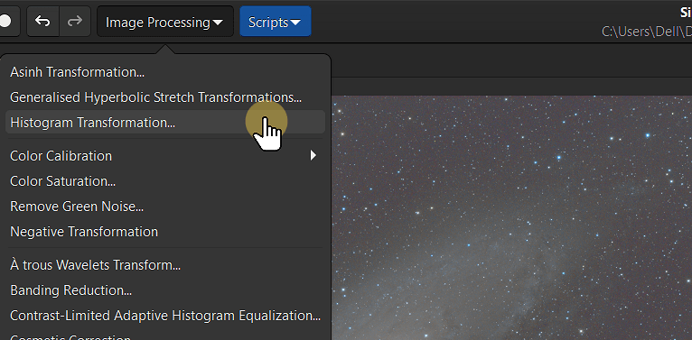
-
2. Aplica el algoritmo de autostretch haciendo clic en el icono situado encima de
clip%.

- 3. Selecciona Asinh transformation. Este ajuste realzará los detalles de tu imagen.
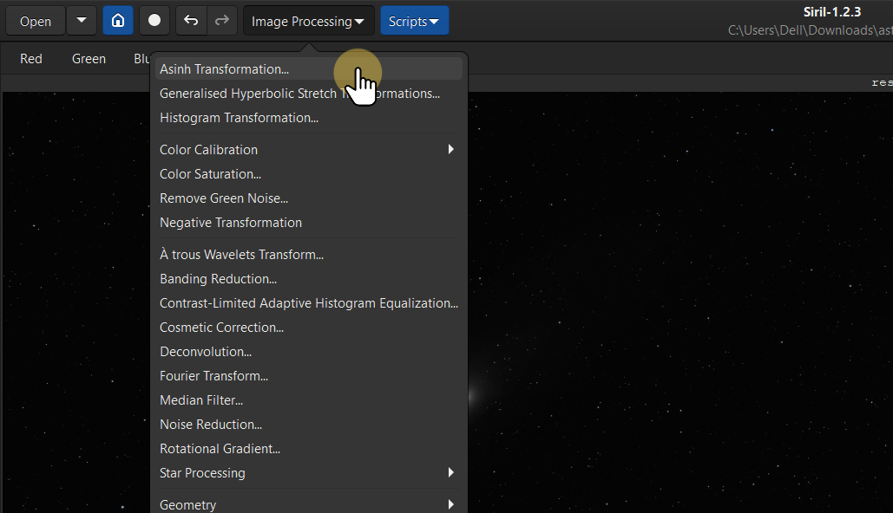
- 4. Ajusta el Stretch Factor a un valor alto para potenciar el contraste y los detalles de la imagen.
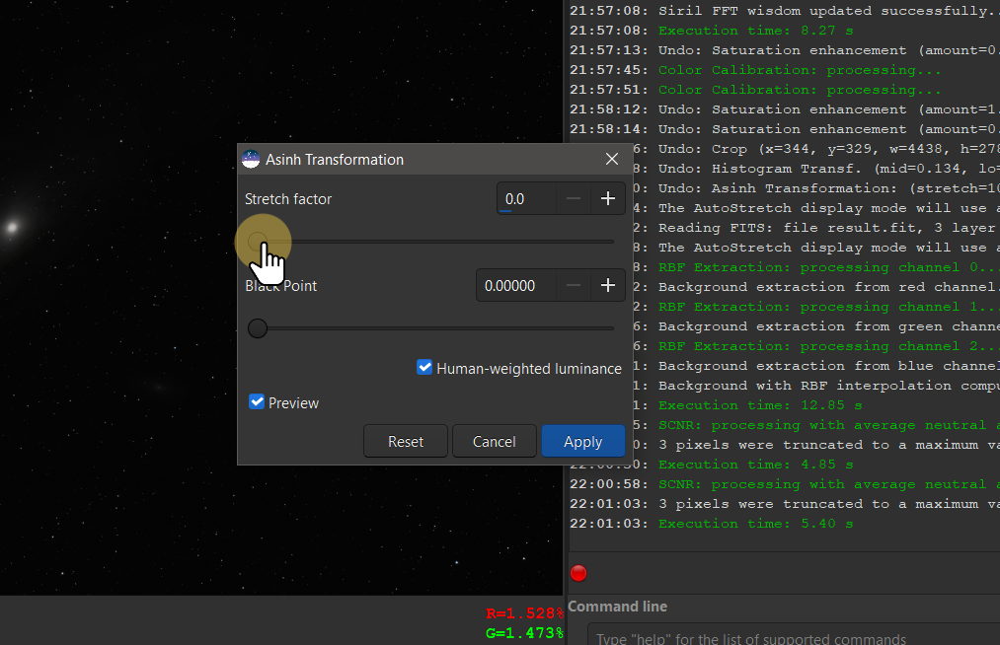
- 5. Haz clic en Apply para aplicar los cambios.
Aplicar colores
- 1. Haz clic en la opción Color Saturation para aumentar la viveza de los colores de tu imagen.
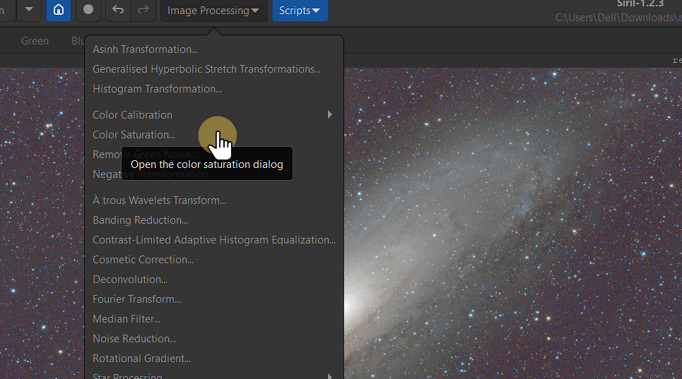
- 2. Elige Global para acceder a una variedad de opciones de color.
- 3. Tras seleccionar las opciones de color deseadas, aumenta la saturación ajustando el control amount. Haz clic en Apply para aplicar los cambios y potenciar la viveza de la imagen.
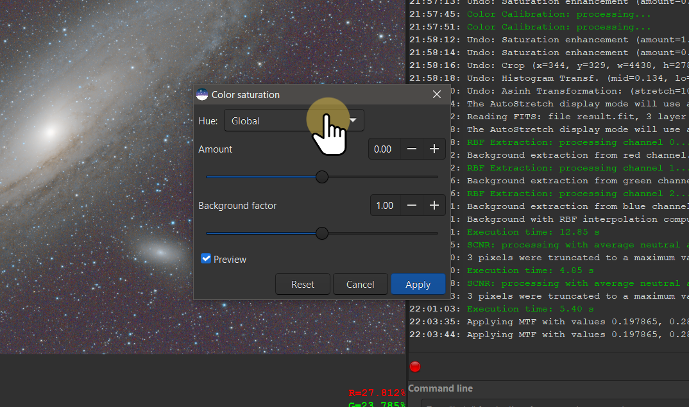
Este es el resultado de la imagen apilada final. Siempre puedes refinarla y mejorarla más usando otros programas de edición fotográfica para realizar ajustes adicionales.
4. Haz clic en la opción Save o Download en la esquina superior derecha para guardar la imagen final.

5. Al guardar la imagen, puedes elegir entre distintos formatos de archivo según tus necesidades.
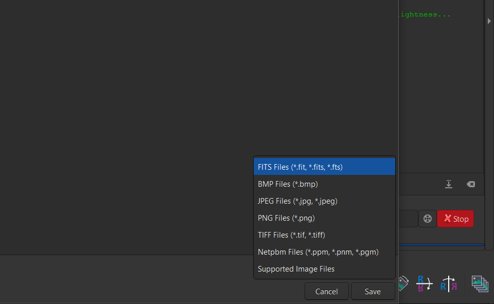
6. Haz clic en Save para descargar la imagen final.
Conclusión
En conjunto, Siril es una herramienta increíblemente potente para astrofotógrafos, con un abanico de funciones que facilita tareas complejas como el apilado y la calibración de imágenes. Su compatibilidad con la automatización mediante múltiples scripts es una característica destacada, ya que ahorra tiempo y esfuerzo, especialmente al gestionar grandes volúmenes de imágenes. Sin embargo, para conseguir los mejores resultados necesitarás algo de paciencia y práctica hasta dominar el flujo de trabajo.
Es importante señalar que esta guía está pensada para principiantes que usan telescopios para astrofotografía y no cubre técnicas más avanzadas como transformaciones de estirado hiperbólico generalizadas, deconvolución, reducción de ruido o herramientas avanzadas de tratamiento de estrellas como StarNet.
Si quieres profundizar en estos temas, te recomiendo encarecidamente visitar Deep Space Astro en YouTube, donde encontrarás tutoriales completos sobre técnicas avanzadas de procesado de imagen.
Créditos
Las imágenes utilizadas en esta guía sobre apilado de imágenes en Siril se han obtenido de Astropix y AstroBackyard. Agradezco enormemente su valiosa contribución a este proyecto al proporcionar recursos de astrofotografía de alta calidad.
Para más detalles, visita Astropix y AstroBackyard.